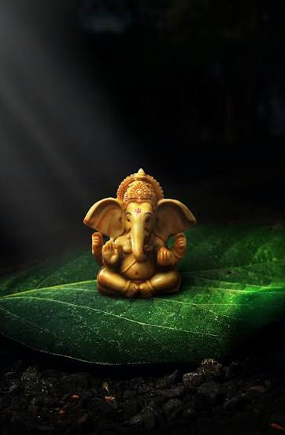

🪔
మన వినాయక సేవా సమితి
Our Devotional Journey
Devotion • Unity • Service • Tradition

స్వామి వారి ఆశీస్సులతో...
Sri Vara Siddhi Vinayaka Seva Samithi, Busstand Center, Parirala brings together devotees and youth every year to celebrate Lord Ganesha with devotion and enthusiasm.
Our celebrations include Ganesh idol installation, pooja, cultural programs, Maha Annadhanam, community service and Nimarjanam.
వక్రతుండ మహాకాయ
సూర్యకోటి సమప్రభః
నిర్విఘ్నం కురుమే దేవ శుభకార్యేషు సర్వదా
నిర్విఘ్నం కురుమే దేవ శుభకార్యేషు సర్వదా